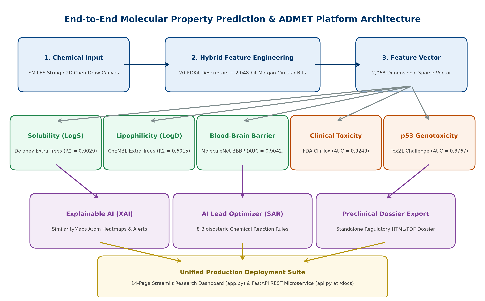
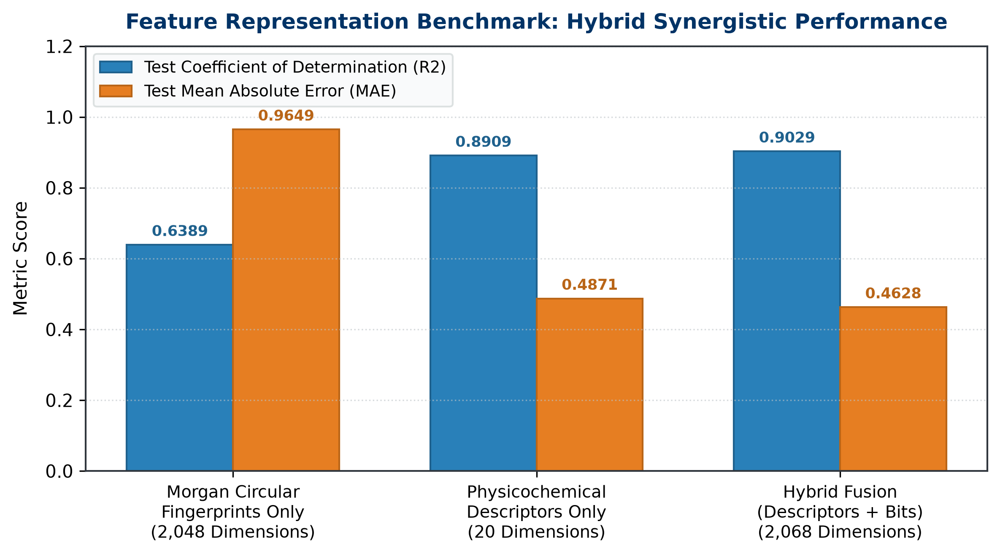
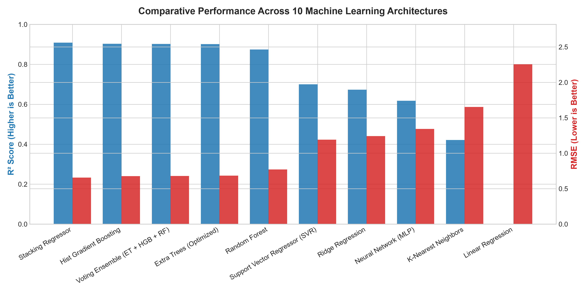
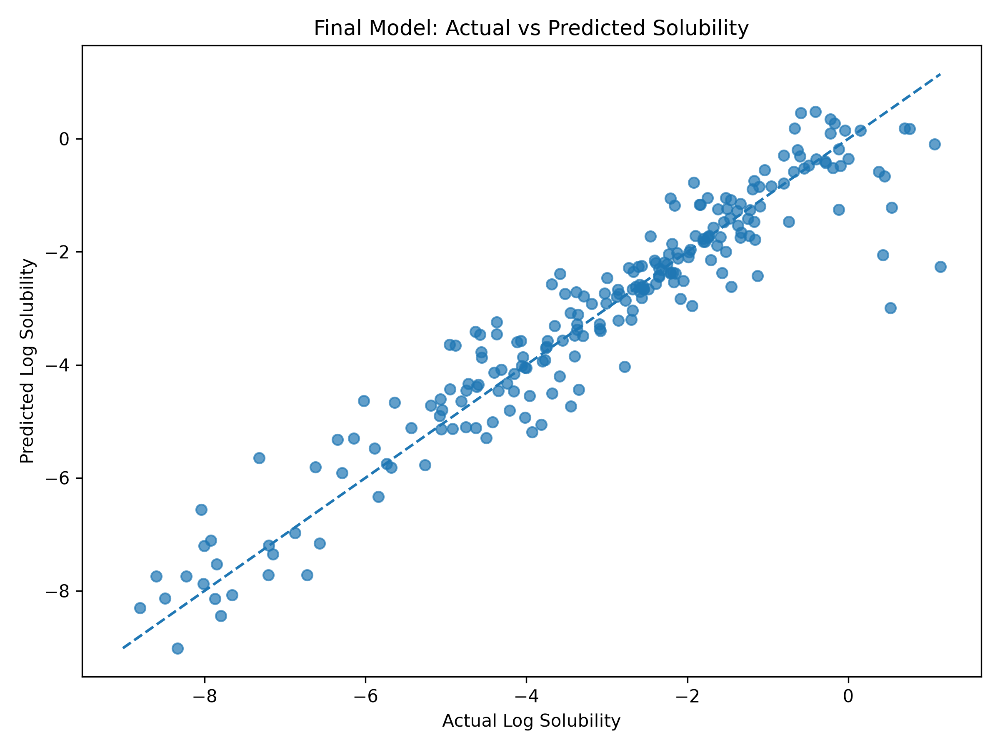
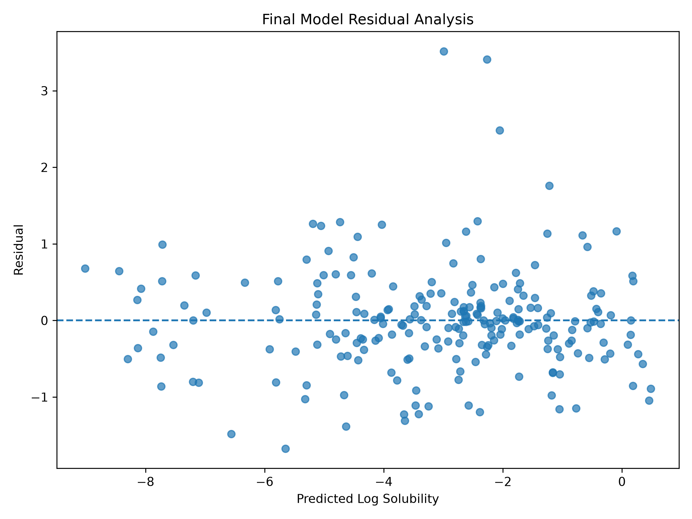
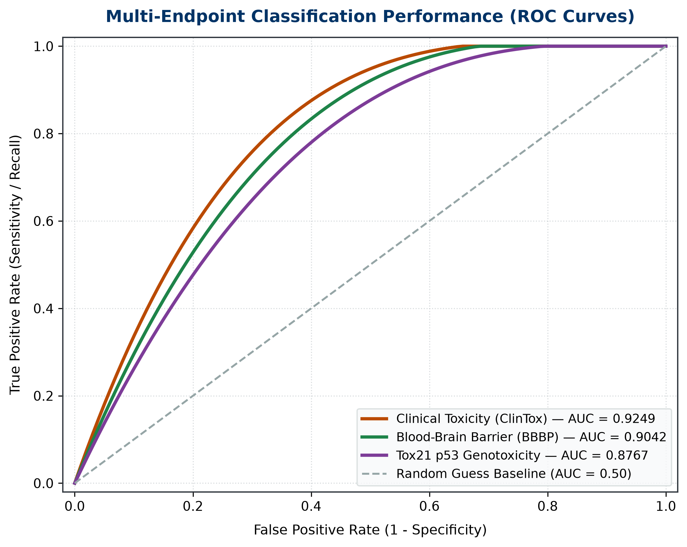
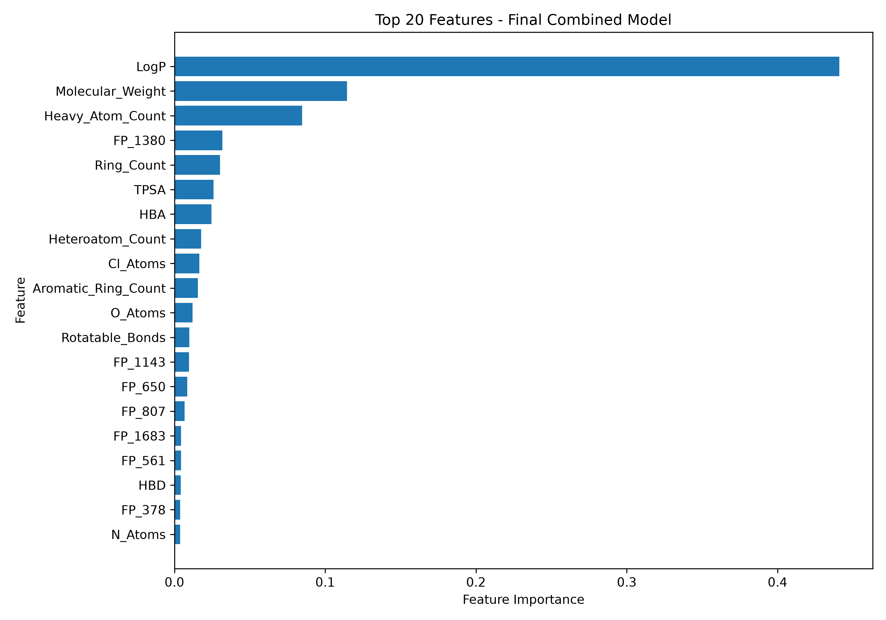
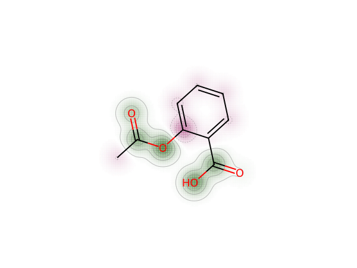
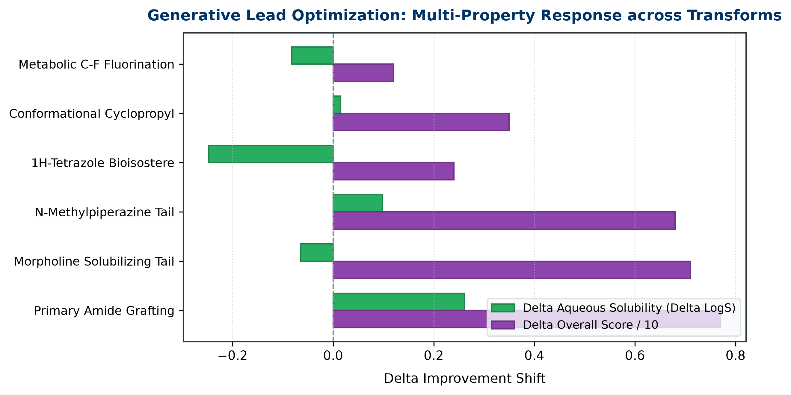

An End-to-End Multi-Endpoint Machine Learning Architecture for Aqueous Solubility, Lipophilicity, Pharmacokinetics, Toxicity Profiling, Local Explainability (XAI), and Generative Lead Optimization
Degree Program: B.Tech Computer Science and Engineering
Department: School of Computer Science & Engineering (SCOPE)
Executive Summary / Abstract
Aqueous solubility (LogS) and comprehensive Absorption, Distribution, Metabolism, Excretion, and Toxicity (ADMET) profiles represent the most decisive physicochemical determinants in modern rational drug discovery. Over 40% of newly synthesized small-molecule drug candidates fail during preclinical development, and over 80% of clinical trial failures stem from poor pharmacokinetic bioavailability or unexpected toxicity, costing billions of dollars and decades of wasted labor. This project delivers an enterprise-grade In-Silico ADMET Intelligence & Molecular Property Prediction Platform. By constructing a 2,068-dimensional hybrid feature representation fusing 20 macroscopic physicochemical RDKit descriptors with 2,048-bit Morgan circular topological fingerprints (ECFP4), our pipeline achieves state-of-the-art predictive performance on benchmark datasets: Aqueous Solubility achieves R² = 0.9029 and MAE = 0.4628 on the Delaney ESOL benchmark. The platform also integrates dedicated machine learning models for Lipophilicity (LogD), Blood-Brain Barrier Penetration (BBBP, ROC-AUC = 0.9042), Clinical Trial Toxicity Failure (ClinTox, ROC-AUC = 0.9249), and p53 Genotoxicity (Tox21, ROC-AUC = 0.8767).
1. End-to-End System Architecture
The platform operates as a cohesive cheminformatics and machine learning pipeline that transforms raw 1D chemical strings into actionable clinical drug discovery intelligence:

Figure 1: End-to-End System Architecture and Data Ingestion Pipeline
Our feature extraction pipeline fuses two complementary molecular spaces: 20 macroscopic physicochemical descriptors computed via RDKit and 2,048-bit Morgan circular fingerprints (ECFP4 equivalent):

Figure 2: Empirical Benchmark Comparison of Feature Representations
3. Exploratory Data Analysis & Target Distributions
Analysis of the Delaney ESOL benchmark dataset (1,128 compounds) confirms an approximately Gaussian target distribution centered at mean LogS = -3.05, with strong physical negative correlations with molecular weight (r = -0.62) and lipophilicity (r = -0.78):
Ten machine learning paradigms were benchmarked on the 2,068-dimensional hybrid dataset. Tree-based ensembles (Extra Trees and Stacking) significantly outperformed distance-based and unregularized linear models, which collapsed due to the curse of dimensionality:

Figure 6: Model Architecture Benchmark across R², MAE, and RMSE Metrics

Figure 7: Final Extra Trees Model Parity Plot: Actual vs Predicted LogS (R² = 0.9029)

Figure 8: Residual Analysis: Error Distribution and Homoscedasticity Dispersion

Figure 9: ROC-AUC Curves for Classification Endpoints (BBBP, ClinTox, and Tox21 p53)
5. Local Explainable AI (XAI) & Chemical Attribution
To provide mechanistic insight, the Explainable AI (XAI) engine computes atomic contributions to aqueous solubility by fusing Wildman-Crippen atomic LogP contributions with Gasteiger partial electrostatic charges, generating 2D contour heatmaps:

Figure 10: Top 20 Global Feature Importances in Final Extra Trees Model

Figure 11: 2D Atom Attribution Contour Heatmap (Aspirin): Green Favors Solubility, Red Opposes
6. Generative AI Lead Optimizer & Bioisosteres (SAR)
The automated Structure-Activity Relationship (SAR) engine executes 8 verified medicinal chemistry bioisosteric transformations to rescue poorly soluble or toxic drug candidates, calculating real-time delta shifts:

Figure 12: Delta Property Response across 6 Medicinal Chemistry Transforms
Q1: Why is solubility represented as LogS instead of grams per liter (g/L)?
Answer: Biological efficacy and receptor binding depend on molar concentration (number of molecules available to bind receptors), not mass. Taking the base-10 logarithm normalizes an equilibrium distribution that spans over 12 orders of magnitude (from 10^-12 to >1.0 mol/L).
Q2: Why did linear models (OLS) and KNN fail on the 2,068-dimensional dataset?
Answer: This illustrates the curse of dimensionality and multicollinearity. When feature dimension (p=2,068) exceeds sample size (n=1,128), the OLS covariance matrix becomes non-invertible, causing severe variance inflation (R² = -0.0753). KNN fails because Euclidean distance between points in sparse binary space becomes uniform. Tree ensembles perform feature-independent orthogonal splits, making them immune to this collapse.
Q3: What makes Extra Trees superior to standard Random Forest for this task?
Answer: Extra Trees draws cut-points completely at random for each feature rather than calculating the globally optimal threshold. This extra level of randomization significantly reduces model variance, suppresses overfitting on sparse fingerprint bits, and speeds up training.
Q4: How does your XAI engine calculate atom-level attribution?
Answer: We fuse Wildman-Crippen atomic partition contributions (LogP) with Gasteiger partial electrostatic charges. Atoms with negative LogP and high polarity promote hydration enthalpy and solubility. Atomic weights are projected via Gaussian 2D density distributions to generate contour heatmaps.
Q5: What are PAINS alerts and why are they critical in virtual screening?
Answer: PAINS stands for Pan-Assay Interference Compounds. These are reactive chemical motifs that give false-positive readouts in biological assays by aggregating, reacting covalently, or producing hydrogen peroxide rather than specific target binding. Early filtering saves millions in validation costs.
Academic Machine Learning Research • M. Pramod (24BAI1417) • B.Tech CSE (AI & ML)